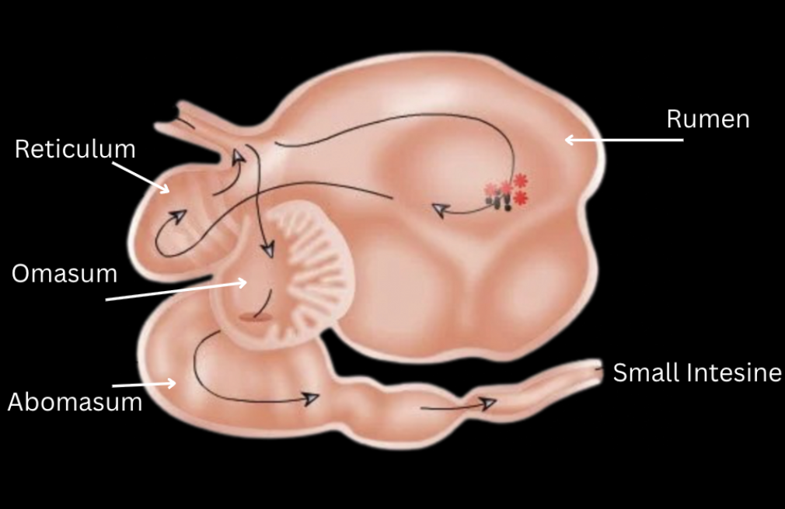
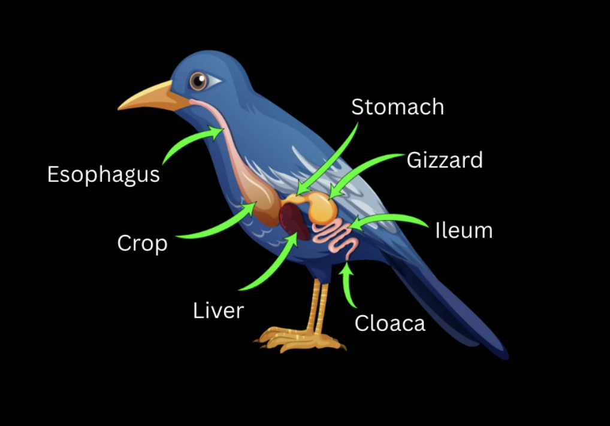

Feeding and Nutrition In Animals
Proper nutrition is key for overall health, growth, reproduction, and a strong immune system.
In order for nutrition to occur, organisms need to feed on food sources. There are various ways to do that:
- Autotrophs → make food for themselves (are able to perform photosynthesis).
- Heterotrophs (consumers) → must eat other organisms for energy.
- Chemotrophs → obtain energy from chemicals (REDOX reactions in their environment).
Types of Consumers:
- Herbivores → only eat vegetation.
- Carnivores → only eat consumers (meat).
- Omnivores → eat both vegetation and other consumers.
- Decomposer → break down organic matter by external digestion (fungi and bacteria).
- Detritivore → break down organic matter internally (worms).
- Parasite → derive nutrients from host at the host’s expense.
- Scavenger → eat off of already dead animals.
Feeding Mechanisms:
- Filter Feeding → obtaining nutrients suspended in water (sponges, whales).
- Deposit feeding → obtaining nutrients from particles suspended in the soil (earthworms).
- Fluid feeding: obtaining nutrients by consuming other organisms' fluids (mosquitos).
- Bulk feeding: ingesting large pieces of food (humans, lions).
Types of Digestive systems:
- Incomplete gut (gastrovascular cavity) → one opening (mouth is also anus) - e.g: cnidarians flatworms.
- Complete gut → separate mouth and anus (most bilaterians - including humans).
- No gut → absorption through skin via diffusion (e.g. some invertebrates).
Special Distinctions (Key for Olympiads):
Intestinal Lengths:
- Carnivores tend to have the shortest intestine lengths because digesting protein is relatively easy.
- Omnivore intestine length falls in between.
- Herbivores have the longest intestines because digesting cellulose requires a lot more attention than other compounds.
Ruminants:
- Herbivorous (e.g. cow, sheep, goat).
- Four-chambered stomach.
- Use microbial fermentation (for cellulose).
- Allows for maximum nutrient extraction from cellulose-rich plant matter (humans can’t digest cellulose).
- *Ecology connection - cows have a symbiotic relationship with the microorganisms in their rumen!
- Food first enters rumen and reticulum together.
- Rumen (largest chamber) is where fermentation takes place that breaks down cellulose (also produces methane as a byproduct). Cows get more energy from bacteria’s products than grass itself!
- Reticulum traps larger particles that haven’t been digested yet. Initiates regurgitation.
- Regurgitated substance is called cud, which the ruminant chews again.
- Cud is re-swallowed and enters the omasum, with a large surface area (many folds) that absorbs water and salts.
- Abomasum (similar to human stomach) - secretes HCl and pepsin to digest proteins.
- Small interesting absorbs nutrients while large interesting absorbs water (similar to humans).

Bird Digestion:
- Crop is a storage pouch key for softening food.
- Proventriculus secretes digestive enzymes (glandular stomach).
- Gizzard grinds food with swallowed stones (muscular stomack).
- Small intestine.
- Ceca (ferments plant matter).
- Cloaca (one exit for digestive, urinary, and reproductive outputs).

Annelida (earthworms) Digestion:
- Crop = temporary storage.
- Gizzard grinds soil using muscular contractions.
- Intestine for absorption.
- Typhlosole is a fold in intestinal wall increasing surface area.
Insect Digestion:
- Foregut (mouth, esophagus, crop, gizzard).
- Midgut (gastric caeca - secretes enzymes; stomach = ventriculus where chemical digestion actually happens).
- Hindgut (intestine, rectum, anus).
- Malpighian tubules → kidneys for insects; collect nitrogen waste (dump waste into hindgut to be excreted).
Written by Josephine Ankomah